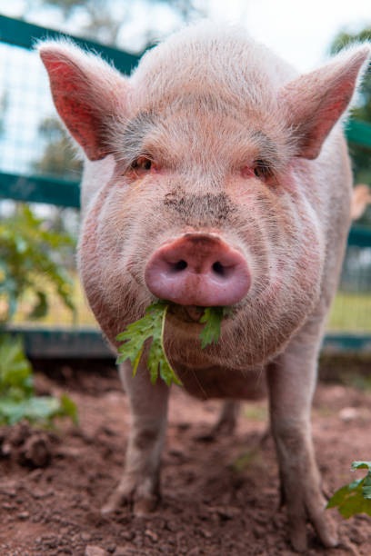
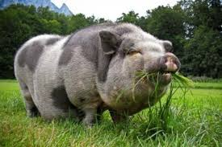
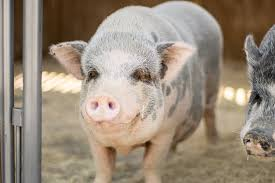

The Pig

The pig is a domesticated farm animal that is raised for its meat, known as pork. Pigs are intelligent and social animals with a significant role in agriculture.
Physical Characteristics
Pigs have a stocky body, short legs, and a distinctive snout used for rooting in the ground. Their skin can be pink, black, or a combination of colors. They also have a curly tail and large, expressive eyes.
Diet
Pigs are omnivores and eat a varied diet including grains, vegetables, and even small animals. Their diet is managed to ensure their growth and health, often consisting of commercial feed mixed with supplements.
Behavior
Pigs are social animals and exhibit playful behavior. They are known for their intelligence and can be trained to perform various tasks. Pigs communicate with each other through vocalizations and body language.
Importance in Agriculture
Pigs are valuable in agriculture for their meat, which is a major source of protein globally. They also contribute to sustainable farming practices as their manure is used as fertilizer.
Use of Pigs on Farms
Pigs are primarily raised for their meat, but they also play roles in crop management and waste recycling. Their manure is used as natural fertilizer, improving soil quality and promoting crop growth.
Advantages of Raising Pigs
Raising pigs offers several advantages:
- Meat Production: Pork is a versatile and widely consumed meat.
- Efficient Feed Conversion: Pigs convert feed into meat efficiently.
- Manure: Pig manure is an effective natural fertilizer.
Fun Facts
- Pigs have an excellent sense of smell, which they use to find food.
- They are one of the most intelligent domesticated animals.
- Pigs can learn to play games and perform tricks.
- A group of pigs is called a sounder.
Statistical Data
- There are approximately 1 billion pigs globally.
- China is the largest producer of pork, accounting for over half of global production.
- The United States is the second-largest producer of pork.
- On average, a pig can weigh between 220 and 300 pounds when ready for market.